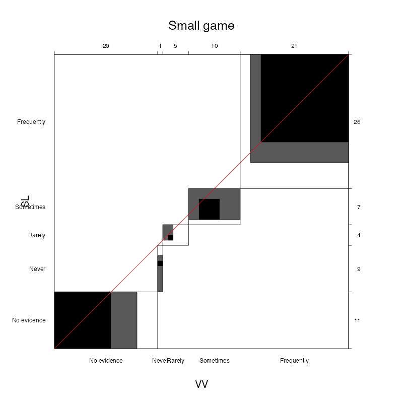
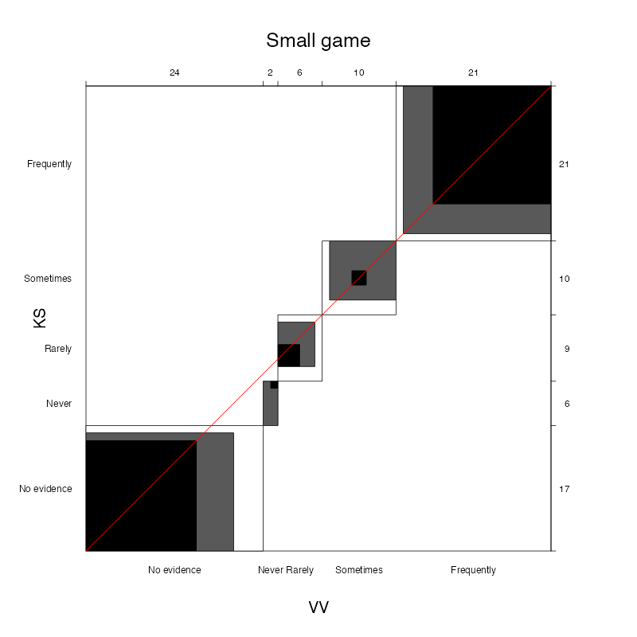
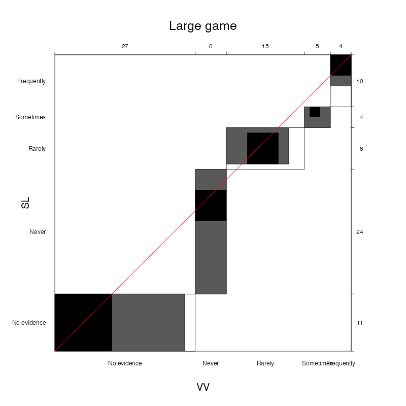
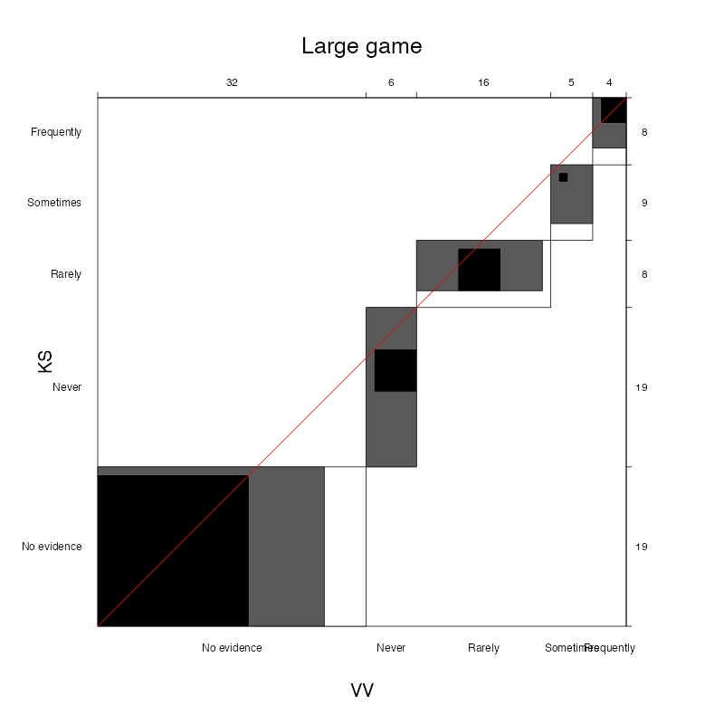

Society: From Anderson et al. (2023)
Prey size: From Anderson et al. (2023). Women hunt small, medium, or large game, or do not hunt.
Our recodingInformation from references: Within the source ethnographies used by Anderson et al (2023), we selected text fragments that appeared to us the most relevant for coding the presence of women’s hunting, the frequency of hunting, and the size of prey hunted. While other sources contained relevant information about women’s hunting in these societies that was not consulted by Anderson et al. (2023), we confined our re-analysis to only the ethnographic sources - and sources used therein - used by Anderson et al. (2023). For a case to count as positive evidence for women’s hunting in our re-coding, it must involve ‘active’ participation by women (not only spiritual or ritual purposes).
Species & body size: Refers to prey specifically hunted by women. When prey pursued not specifically referred to, all potential prey listed. Species names taken from source ethnography; various online sources used to find average body weights. Most paragraphs contained information about prey species pursued. When this was not the case and thus no information about body size was available, we sourced potential prey species from online or ethnographic sources. These sources are listed. In cases where women are clearly not hunting based on the evidence, prey species not listed.
Hunt small-medium game (<45kg), Hunt large game (≥45kg): For these columns, we assessed the frequency of hunting. In cases where the body size of prey straddles the 45 kg cutoff, both columns were coded. When conflicting information is present between or within paragraphs (see the case of the !Kung, in which it is said ‘women do not hunt’, but in the same paragraph it is stated that they participate as beaters), we consider the concrete statements to overrule the general statement, thus favoring positive coding of women’s hunting.
Rationale: Our reasons for our codings of women’s small and large game hunting frequency.
We evaluated inter-rater reliability using agreement plots and Bangdiwala’s \(B\) statistic (Munoz and Bangdiwala 1997; Bangdiwala and Shankar 2013) separately for small and large game, and for raters 2 and 3 vs. the original coding. Agreement plots depict the degree of agreement and disagreement for each category. Bangdiwala’s \(B\) (Bangdiwala and Shankar 2013) is the chance-corrected degree of agreement computed from the contingency table of the ratings of two raters:
\[ B = \frac{\sum_{i=1}^{k}x_{ii}^2}{\sum_{i=1}^kx_{i.}x_{.i}} \]where \(x_{ii}\) are the values on the diagonal (i.e., the counts of agreement), and \(x_{i.}\) and \(x_{.i}\) are the sums of row \(i\) and column \(i\), respectively. The denominator is therefore the maximum possible agreement, given the marginal totals. Values of \(B\ge0.81\) are interpreted as “almost perfect” agreement (Munoz and Bangdiwala 1997).
The weighted Bangdiwala statistic (Bangdiwala and Shankar 2013) for rater 2 agreement for small game was B = 0.73, and for rater3 was B = 0.8. The weighted Bangdiwala statistic for rater 2 agreement for large game was B = 0.85, and for rater 3 was B = 0.81. Comparing the independent re-coding of rater 3 with the original re-coding, we identified 10 societies for which there were substantial discrepancies, i.e., a difference of two or more on our ordinal scale (e.g., a coding of “Never” vs. “Sometimes”). These major discrepancies were resolved and the original recode data set updated, which is what we report.
Below are agreement plots for small game and large game for the original ratings (x-axis) vs. rater 2 (y-axis, left) and rater 3 (y-axis, right). The larger outer white rectangles represent the maximum possible agreement for each category, the inner black rectangles represent complete rater agreement, and the gray rectangles represent partial agreement, i.e., adjacent ratings, such as Never vs. Rarely, or Rarely vs. Sometimes.
   